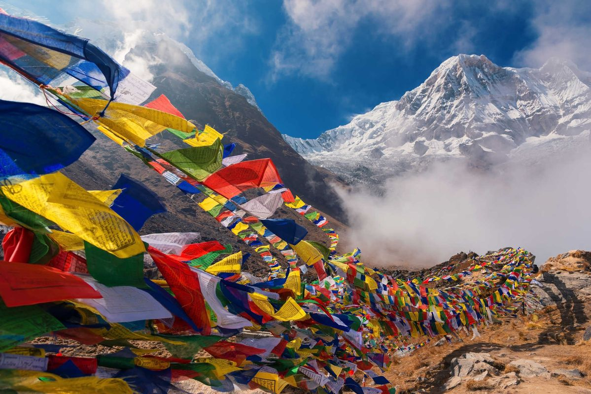
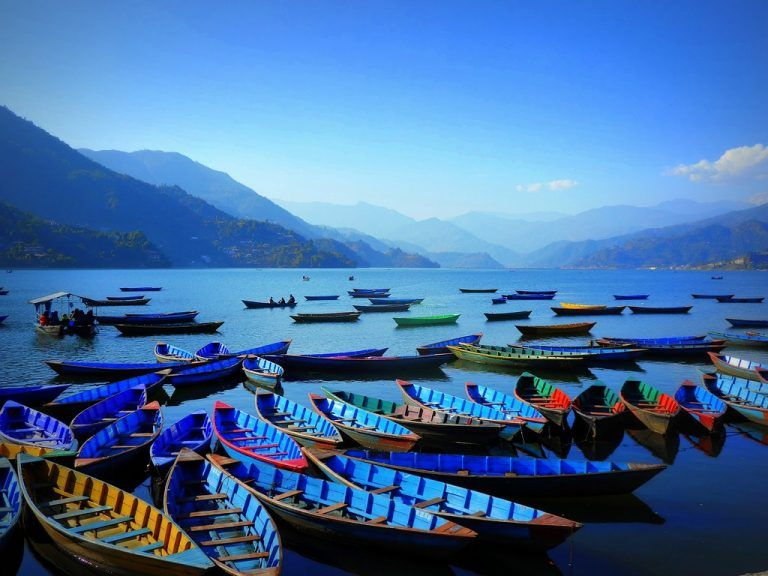
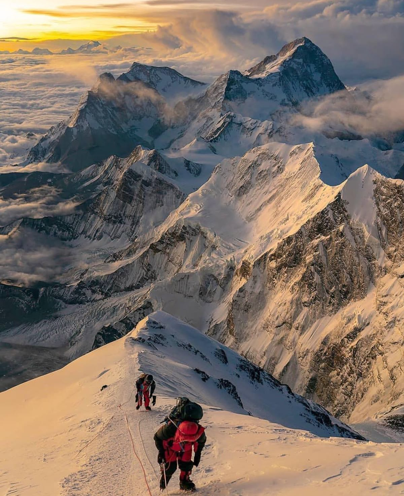
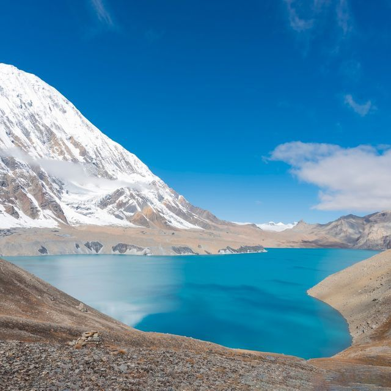
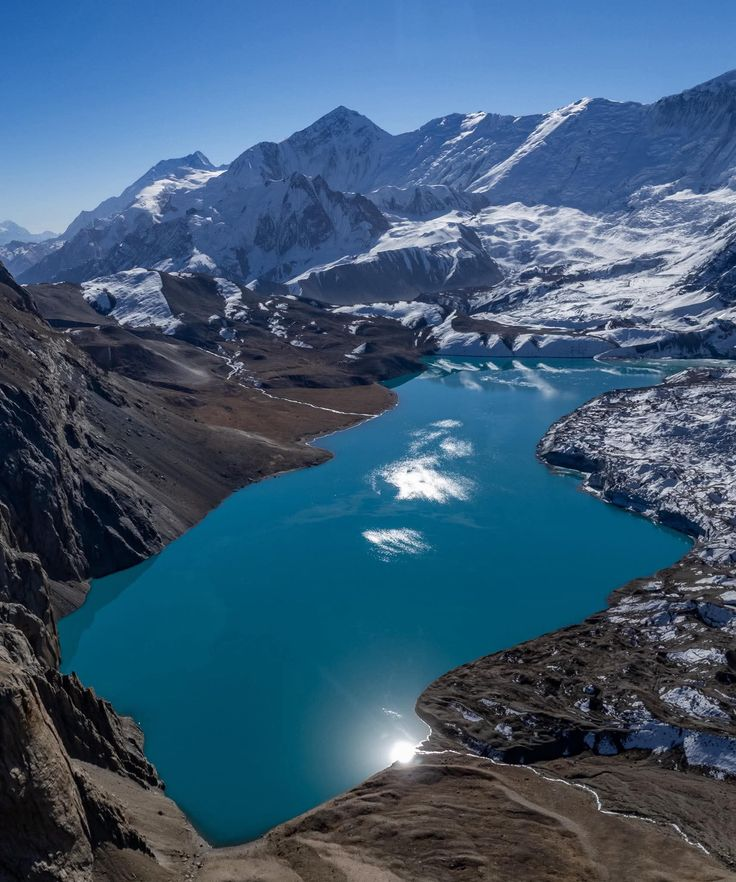
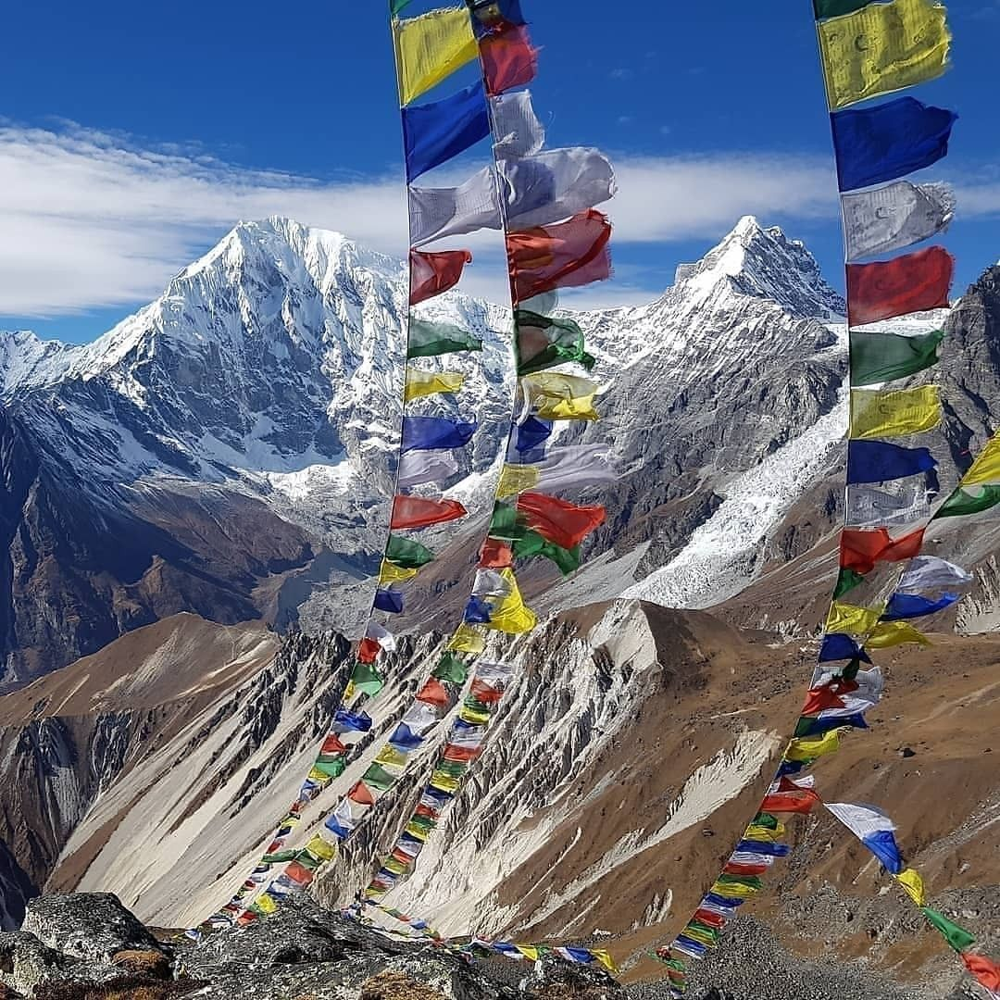
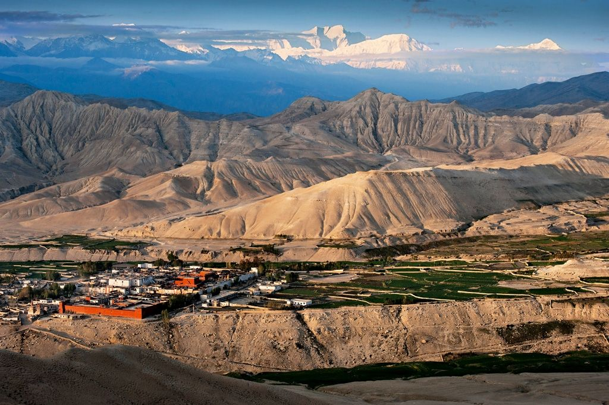
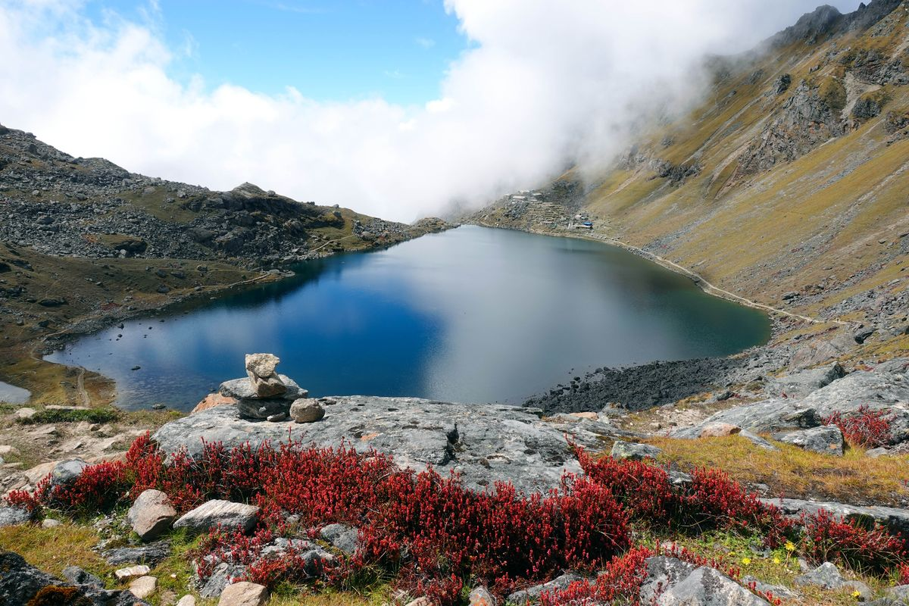
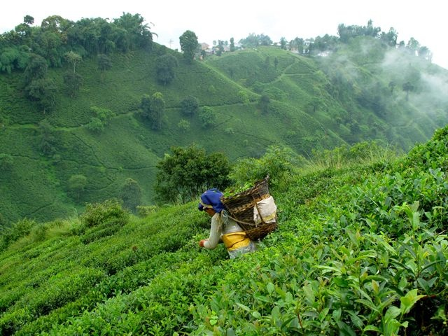

Natural Wonders
Discover 10 breathtaking natural locations across Nepal.

Annapurna Sanctuary
A high-altitude glacial basin surrounded by a ring of some of the world's highest mountains. It is a sacred site for Gurung and Magar indigenous peoples.

Chitwan National Park
Nepal's first national park, famous for the successful conservation of the Greater One-horned Rhinoceros and the Royal Bengal Tiger.

Pokhara
Known as the tourism capital of Nepal, where mountains meet tranquil lakes. It offers a laid-back atmosphere rare for high-altitude proximity.

Sagarmatha National Park
Home to Mount Everest, this UNESCO site is unique for its dramatic mountain landscapes and legendary Sherpa culture.

Rara Lake
The largest and deepest freshwater lake in Nepal. It is a hidden gem untouched by mass tourism, known as the "Queen of Lakes".

Shey Phoksundo National Park
The largest trans-Himalayan park in Nepal, featuring a turquoise lake devoid of aquatic life and ancient Bon-Po culture.

Langtang Valley
Known as the "Valley of Glaciers," it offers a blend of high-altitude pastures and rich Tamang culture near Kathmandu.

Upper Mustang
A remote, arid Kingdom of Lo sitting in the rain shadow. It features desert-like sandstone cliffs and mysterious sky caves.

Gosaikunda Lake
A sacred alpine pilgrimage site at 4,380 meters, believed to be created by Lord Shiva.

Ilam
The "Tea Capital" of Nepal, famous for rolling green hills completely covered in tea bushes and misty landscapes.